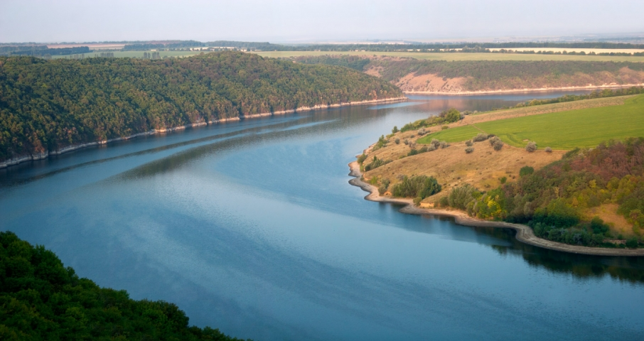
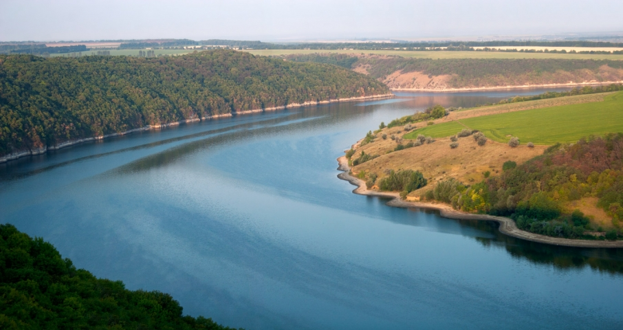

СПЛИВ ПО
ЧУДОВІЙ РІЧЦІ
ДНІСТЕР
ЗАПИСАТИСЯ НА СПЛИВ


ЗАПИСАТИСЯ НА СПЛИВ
В експедиції Ви перевірите і реалізуєте свої можливості та знайдете друзів на все життя! Це прекрасна можливість розвинути лідерські якості на посадах капітана катамарану і хорунжого експедиції. В поході реально можна навчитися уникати конфліктних ситуацій при роботі в команді, вдосконалити комунікативні якості . Експедиція “Дністер” - це чудове поєднання здорового відпочинку серед мальовничої природи і суспільно-корисної праці. За 30 років роботи в експедиції побувало близько 700 людей з багатьох країн Центрально-Східної Європи та Північної Америки. Кожен, хто хоч раз побуває на Дністрі, буде мріяти повернутися сюди ціле життя. Ми маємо учасників котрі брали участі експедиції 10-20 разів! І це не дивно!
Дністер - це найпрекрасніша річка на теренах СНД. Урвисті береги Дністра покриті лісами, в яких ніколи не дзвеніла сокира людини. Зі схилів течуть чисті потоки цілющої джерельної води. Неймовірна тиша. В долинах розташовані мальовничі села. Фортеці, палаци, печери, цвинтарі - це дзеркало багатої подіями історії Центрально-Східної Європи. З високих берегів Дністра видно цілу панораму мальовничого Поділля. Експедиція “Дністер” працює незалежно від урядів і міжнародних фондів за рахунок внесків учасників і можливих пожертв приватних осіб. ІІ тільки.. В програмі роботи - екологічні і культурологічні дослідження. Жодних обмежень! Кожен з учасників може вибрати або запропонувати будь-який напрямок досліджень. Повна свобода вибору!
Робочі мови - українська, англійська, польська, німецька. Один день перебування в експедиції для учасників коштує 100 гривнів (гроші йдуть на харчування та оплату ремонту та доставки експедиційного реманенту і плавзасобів на Дністер і назад). Сервіс - самообслуговування. Учасники самі собі готують їжу по черзі під керівництвом досвідченого шеф-кухаря. Організація відпочинку: дві-три дні плавання на катамаранах байдарках, один-два наступних - стоянка на березі поблизу сіл. На стоянках - пішохідні походи на дослідження і прогулянки в села, до історичних, природних і культурних пам’яток. Вечорами - колективні ігри, пісні, танці біля романтичного вогнища. Сон у наметах в тиші дністровських ночей. Вимоги для учасників, обумовлені специфікою польових досліджень: - християнська етика; - відсутність фізичних дефектів; - вік від 16 до пенсійного; - вживання алкоголю тільки з дозволу капітана!
 

Ви отримаєте неперевершені емоції, від спливу, познайомитися з новими людьми і прекрасно проведете час.
Протягом всього спливу Ви будете бачити неперевершені краєвиди та любуватися красою природи.
Ви познайомитися з веселеми людьми, які люблять активно відпочивати та обов'язково знайдете з ними спільну мову.